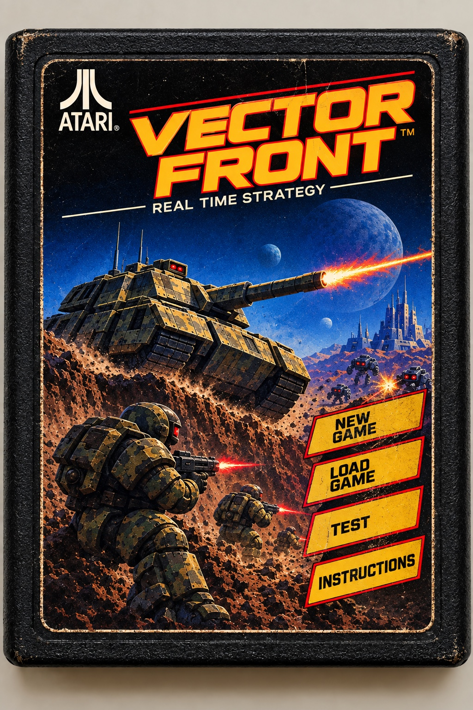

Uncheck a unit to make it unavailable to that team for this game - it can't be purchased by the player, and the computer won't build it either. Checked units are available as normal.
How to play
Vector Front is a real-time strategy game. You command the blue team; the red team is controlled by the computer. Both sides start with a home base and a roster of units, and both sides continuously produce more units for as long as they have supply banked and a depot to build from.
The objective is simple: destroy the enemy base before they destroy yours. Everything else - capturing supply depots, massing an army, defending your territory - exists to support that one goal.
Supply is the currency used to purchase new units. You start with some supply banked and a trickle of income from your own base, but the real growth comes from capturing supply depots scattered around the map - send Infantry to a neutral or enemy depot to claim it for your side. Each depot you own raises how much supply you're allowed to bank at once and adds to your income, so holding territory directly translates into a bigger army over time.
Mountains and lakes block movement entirely and can only be shot over, not through. Trees and buildings block vehicles but not Infantry or Scouts, and both can be destroyed by explosive weapons. Infantry that linger near a tree or building for a few seconds without moving become concealed from the enemy, and buildings can hide Infantry from view entirely - even after the building is destroyed.
Every unit's exact stats are listed below. Damage is per hit (or per rocket, for LRM Mech); Fire Cooldown is the time between shots; Range is how far it can shoot; Sight is how far it can see; Speed is how fast it moves.
All enemy forces eliminated.
Loading will discard your current progress. Continue?